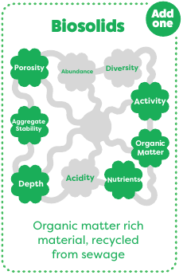
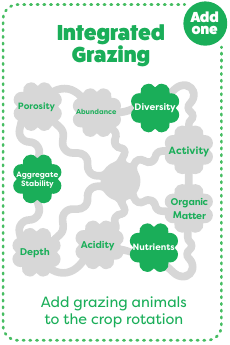
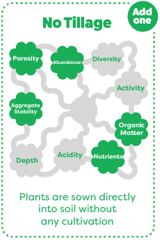
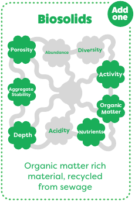
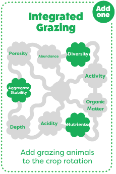
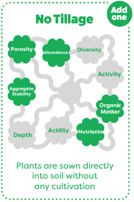

The Soil Game
Character descriptions
Attribution
Based on Dirty Matters: The Soil Game.
Licensed under Creative Commons license BY-NC-SA 4.0.


 





Based on Dirty Matters: The Soil Game.
Licensed under Creative Commons license BY-NC-SA 4.0.